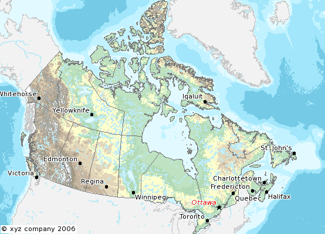

FAQ¶
Where is the MapServer log file?¶
What books are available about MapServer?¶
“Mapping Hacks” by Schuyler Erle, Rich Gibson, and Jo Walsh is available from O’Reilly.
“Web Mapping Illustrated” by Tyler Mitchell is available from O’Reilly. Introduces MapServer and many other related technologies including, GDAL/OGR, MapScript, PostGIS, map projections, etc.
“MapServer: Open Source GIS Development” by Bill Kropla.
How do I compile MapServer for Windows?¶
See Compiling on Win32. Also, you can use the development libraries in OSGeo4W as a starting point instead of building all of the dependent libraries yourself. Windows users wanting a full installer (including Apache, MapServer, mapscripts, GDAL) please see MS4W
What do MapServer version numbers mean?¶
MapServer’s version numbering scheme is very similar to Linux’s. For example, a MapServer version number of 4.2.5 can be decoded as such:
4: Major version number. MapServer releases a major version every two to three years.
2: Minor version number. Increments in minor version number almost always relate to additions in functionality.
5: Revision number. Revisions are bug fixes only. No new functionality is provided in revisions.
From a developer’s standpoint, MapServer version numbering scheme is also like Linux. Even minor version numbers (0..2..4..6) relate to release versions, and odd minor versions (1..3..5..7) correspond to developmental versions.
Is MapServer Thread-safe?¶
Q: Is MapServer thread-safe?
A: Generally, no (but see the next question). Many components of MapServer use static or global data that could potentially be modified by another thread. Under heavy load these unlikely events become inevitable, and could result in sporadic errors.
Q: Is it possible to safely use any of MapServer in a multi-threaded application?
A: Some of it, yes, with care. Or with Python :) Programmers must either avoid using the unsafe components of MapServer or carefully place locks around them. Python’s global interpreter lock immunizes against MapServer threading problems; since no mapscript code ever releases the GIL all mapscript functions or methods are effectively atomic. Users of mapscript and Java, .NET, mod_perl, or mod_php do not have this extra layer of protection.
A: Which components are to be avoided?
Q: Below are lists of unsafe and unprotected components and unsafe but locked components.
Unsafe:
OGR layers: use unsafe CPL services
Cartoline rendering: static data
Imagemap output: static data
SWF output: static data and use of unsafe msGetBasename()
SVG output: static data
WMS/WFS server: static data used for state of dispatcher
Forcing a temporary file base (an obscure feature): static data
MyGIS: some static data
Unsafe, but locked:
Map config file loading: global parser
Setting class and and layer filter expressions (global parser)
Class expression evaluation (global parser)
Setting map and layer projections (PROJ)
Raster layer rendering and querying (GDAL)
Database Connections (mappool.c)
PostGIS support
Oracle Spatial (use a single environment handle for connection)
SDE support (global layer cache)
Error handling (static repository of the error objects)
WMS/WFS client connections: potential race condition in Curl initialization
Plugin layers (static repository of the loaded dll-s)
Rather coarse locks are in place for the above. Only a single thread can use the global parser at a time, and only one thread can access GDAL raster data at a time. Performance is exchanged for safety.
What does STATUS mean in a LAYER?¶
STATUS ON and STATUS OFF set the default status of the layer. If a map is requested, those layers will be ON/OFF unless otherwise specified via the layers parameter. This is particularly the case when using MapScript and MapServer’s built-in template mechanism, but is also useful as a hint when writing your own apps and setting up the initial map view.
STATUS DEFAULT means that the layer is always on, even if not specified in the layers parameter. A layer’s status can be changed from DEFAULT to OFF in MapScript, but other than that, it’s always on.
CGI turns everything off that is not “STATUS DEFAULT” off so all layers start from the same state (e.g. off) and must be explicitly requested to be drawn or query. That common state made (at least in my mind) implementations easier. I mean, if a layer “lakes” started ON the doing layer=lakes would turn it OFF. So I wanted to remove the ambiguity of a starting state.
How can I make my maps run faster?¶
There are a lot of different approaches to improving the performance of your maps, aside from the obvious and expensive step of buying faster hardware. Here are links to some individual howtos for various optimizations.
Some general tips for all cases:
First and foremost is hardware. An extra GB of RAM will give your map performance increases beyond anything you’re likely to achieve by tweaking your data. With the price of RAM these days, it’s cheap and easy to speed up every map with one inexpensive upgrade.
Use the scientific method. Change one thing at a time, and see what effect it had. Try disabling all layers and enabling them one at a time until you discover which layer is being problematic.
Use map2img program to time your results. This runs from the command line and draws an image of your entire map. Since it’s run from the command line, it is immune to net lag and will give more consistent measurements that your web browser.
What does Polyline mean in MapServer?¶
There’s confusion over what POLYLINE means in MapServer and via ESRI. In MapServer POLYLINE simply means a linear representation of POLYGON data. With ESRI polyline means multi-line. Old versions of the Shapefile technical description don’t even refer to polyline shapefiles, just line. So, ESRI polyline shapefiles are just linework and can only be drawn and labeled as LINE layers. Those shapefiles don’t have feature closure enforced as polygon shapefiles do which is why the distinction is so important. I suppose there is a better choice than POLYLINE but I don’t know what it would be.
Note
The only difference between POLYLINE and LINE layers is how they are labeled.
What is MapScript?¶
MapScript is the scripting interface to MapServer, available through the SWIG API. MapScript allows you to program with MapServer’s objects directly instead of interacting with MapServer through its CGI and Mapfile.
Note
As of the MapServer 8.0.0 release PHP support is only available through MapServer’s SWIG API. (previous versions could also access the unmaintained PHP MapScript API)
Does MapServer support reverse geocoding?¶
No.
Reverse geocoding is an activity where you take a list of street features that you already have and generate postal addresses from them. This kind of spatial functionality is provided by proprietary packages such as the ESRI suite of tools, as well as services such as those provided by GDT. MapServer is for map rendering, and it does not provide for advanced spatial operations such as this.
Does MapServer support geocoding?¶
No.
Geocoding is an activity where you take a list of addresses and generate lat/lon points for them. This kind of spatial functionality is provided by proprietary packages such as the ESRI suite of tools, as well other sites. MapServer is for map rendering, and it does not provide for advanced spatial operations such as this.
There are many free geocoders available, such as https://geolytica.com (geocoder.ca) for North America, or you can set up your own service using OpenStreetMap data, TIGER data, or other open data sources. Then you could hook your application up to use this service to provide lat/lon pairs for addresses, and then use MapServer to display those points (possibly through MapScript).
How do I set line width in my maps?¶
In the current MapServer version, line width is set using the STYLE parameter WIDTH. For a LINE layer, lines can be made red and 3 pixels wide by using the following style in a CLASS.
STYLE
COLOR 255 0 0
WIDTH 3
END
In earlier versions of MapServer , you could set the symbol for the LAYER to ‘circle’ and then you can set the symbol SIZE to be the width you want. A ‘circle’ symbol can be defined as
SYMBOL
NAME 'circle'
TYPE ELLIPSE
FILLED TRUE
POINTS 1 1 END
END
Which image format should I use?¶
Although MapScript can generate the map in any desired image format it is sufficient to only consider the most prevalent ones: JPEG and PNG.
JPEG is an image format that uses a lossy compression algorithm to reduce an image’s file size and is mostly used when loss of detail through compression is either not noticeable or negligible, as in most photos. Maps on the other hand mainly consist of fine lines and areas solidly filled in one colour, which is something JPEG is not known for displaying very well. In addition, maps, unless they include some aerial or satellite imagery, generally only use very few different colours. JPEG with its 24bit colour depth capable of displaying around 16.7 million colours is simple not suitable for this purpose. PNG8 however use an indexed colour palette which can be optimized for any number (up to 256) of colours which makes them the perfect solution for icons, logos, charts or maps. The following comparison (generated file sizes only; not file generation duration) will therefore only include these two file formats:
PNG8 |
PNG24 |
|
|---|---|---|
Vector Data only |
26kb |
69kb |
Vector Data & Satellite Image coloured |
182kb |
573kb |
Vector Data & Satellite Image monochrome |
134kb |
492kb |
(results based on an average 630x396 map with various colours, symbols, labels/annotations etc.)
PNG8 is the clear quantitative winner in terms of generated file sizes for maps with or without additional monochrome imagery. If the mapping application however can also display fullcolour aerial or satellite imagery, the output file format can be changed dynamically to PNG24 to achieve the highest possible image quality.
How do I add a copyright notice on the corner of my map?¶
You can use an inline feature, with the FEATURE object, to make a point on your map. Use the TEXT parameter of the FEATURE object for the actual text of the notice, and a LABEL object to style the notice.
Example Layer¶
LAYER
NAME "copyright"
STATUS on
TYPE point
TRANSFORM ll # set the image origin to be lower left
UNITS PIXELS # sets the units for the feature object
FEATURE
POINTS
60 -10 # the offset (from lower left) in pixels
END # Points
TEXT "© xyz company 2006" # this is your displaying text
END # Feature
CLASS
STYLE # has to have a style
END # style
LABEL # defines the font, colors etc. of the text
FONT "times"
TYPE truetype
SIZE 8
BUFFER 1
COLOR 0 0 0
FORCE true
STYLE
GEOMTRANSFORM 'labelpoly'
COLOR 255 255 255 # white
END # Style
END # Label
END # Class
END # Layer
Result¶

How do I have a polygon that has both a fill and an outline with a width?¶
How do I have a polygon that has both a fill and an outline with a width? Whenever I put both a color (fill) and an outlinecolor with a width on a polygon within a single STYLE, the outline width isn’t respected.
For historical reasons, width has two meanings within the context of filling polygons and stroke widths for the outline. If a polygon is filled, then the width defines the width of the symbol inside the filled polygon. In this event, the outline width is disregarded, and it is always set to 1. To achieve the effect of both a fill and an outline width, you need to use two styles in your class.
STYLE # solid fill
COLOR 255 0 0
END
STYLE # thick outline
OUTLINECOLOR 0 0 0
WIDTH 3
END
Which OGC Specifications does MapServer support?¶
Why does my requested WMS layer not align correctly?¶
Requesting a layer from some ArcIMS WMS connectors results in a map with misaligned data (the aspect ratio of the pixels looks wrong).
Some ArcIMS sites are not set up to stretch the returned image to fit the requested envelope by default. This results in a map with data layers that overlay well in the center of the map, but not towards the edges. This can be solved by adding “reaspect=false” to the request (by tacking it on to the connection string).
For example, if your mapfile is in a projection other than EPSG:4326, the following layer will not render correctly:
LAYER
NAME "hillshade"
TYPE RASTER
STATUS OFF
TRANSPARENCY 70
CONNECTIONTYPE WMS
CONNECTION "http://gisdata.usgs.net:80/servlet19/com.esri.wms.Esrimap/USGS_WMS_NED?"
PROJECTION
"init=epsg:4326"
END
METADATA
"wms_srs" "EPSG:4326"
"wms_title" "US_NED_Shaded_Relief"
"wms_name" "US_NED_Shaded_Relief"
"wms_server_version" "1.1.1"
"wms_format" "image/png"
END
END
Adding “reaspect=false” to the connection string solves the problem:
LAYER
NAME "hillshade"
TYPE RASTER
STATUS OFF
TRANSPARENCY 70
CONNECTIONTYPE WMS
CONNECTION "http://gisdata.usgs.net:80/servlet19/com.esri.wms.Esrimap/USGS_WMS_NED?reaspect=false"
PROJECTION
"init=epsg:4326"
END
METADATA
"wms_srs" "EPSG:4326"
"wms_title" "US_NED_Shaded_Relief"
"wms_name" "US_NED_Shaded_Relief"
"wms_server_version" "1.1.1"
"wms_format" "image/png"
END
END
When I do a GetCapabilities, why does my browser want to download mapserv.exe/mapserv?¶
A beginner question here… I’m new to MS and to Apache. I’ve got MS4W up and running with the Itasca demo. Now I want to enable it as a WMS server. mapserv -v at the command line tells me it supports WMS_SERVER. When I point my browser to it, my browser just wants to download mapserv.exe!
What am I missing?
Here is the URL I’m using to issue a GetCapabilities WMS request: http://localhost/cgi-bin/mapserv.exe?map=../htdocs/itasca/demo.map&SERVICE=WMS&VERSION=1.1.1&REQUEST=GetCapabilities
The OGC:WMS 1.1.0 and 1.1.1 specifications (which are both supported by MapServer) state that, for GetCapabilities responses, the OGC:WMS server returns a specific MIME type (i.e. application/vnd.ogc.xml (see subclause 6.5.3 of OGC:WMS 1.1.1.
A MIME type is passed from the web server to the client (in your case, a web browser), from which a client can decide how to process it.
Example 1: if using a web browser, if a web server returns an HTTP Header of “Content-type:image/png”, then the web browser will know that this is a PNG image and display it accordingly.
Example 2: if using a web browser, if a web server returns an HTTP Header of “Content-type:text/html”, then the web browser will know that this is an HTML page and display it accordingly (i.e. tables, divs, etc.)
Basically, what is happening is that the OGC:WMS is returning, in the headers of the HTTP response, a MIME type which your web browser does not understand, which usually prompts a dialog box on whether to open or download the content (i.e. Content-type:application/vnd.ogc.wms_xml).
You could configure your web browser to handle the application/vnd.ogc.wms_xml MIME type a certain way (i.e. open in Notepad, etc.).
Why do my WMS GetMap requests return exception using MapServer 5.0?¶
Before upgrading to MapServer 5.0, I was able to do quick GetMap tests in the form of: http://wms.example.com/wms?service=WMS&version=1.1.1&request=GetMap&layers=foo
Now when I try the same test, MapServer WMS returns an XML document saying something about missing required parameters. What’s going on here?
This was a major change for WMS Server support in MapServer 5.0. MapServer WMS Server GetMap requests now require the following additional parameters:
srs
bbox
width
height
format
styles
Note
These parameters were always required in all versions of the WMS specification, but MapServer previously had not required them in a client request (even though most OGC WMS clients would issue them anyway to be consistent with the WMS spec).
The request below now constitutes a valid GetMap request:
http://wms.example.com/wms?service=WMS&version=1.1.1&request=GetMap&layers=foo&srs=EPSG:4326&bbox=-180,-90,180,90&format=image/png&width=400&height=300&styles=default
Which is consistent with the WMS specification.
More information on these parameters can be found in the WMS Server and the OGC WMS 1.1.1 specification
For more detailed information, see ticket 1088
Warning
STYLES, though a required WMS parameter, is now optional again in MapServer. For more detailed information, see ticket 2427
Using MapServer 6.0, why don’t my layers show up in GetCapabilities responses or are not found anymore?¶
MapServer 6.0 introduces the option of hiding layers against OGC Web Service requests. OGC Web Services can provide powerful access to your geospatial data. It was decided to disable layer level request access as a default. See MS RFC 67: Enable/Disable Layers in OGC Web Services provides a full explanation of the changes and implications.
To enable pre-6.0 behaviour, you can add the following to the WEB object’s METADATA section in your mapfile:
"ows_enable_request" "*"
This will enable access of all layers to all OGC Web Service requests.
Where do I find my EPSG code?¶
For PROJ version >= 6, there is a SQLite database proj.db in your PROJ installation (e.g. /usr/local/share/proj/proj.db) which contain the EPSG information used by PROJ. On Windows, MS4W version >= 5 users can find the proj.db file at /ms4w/share/proj/, or it can be generally found with an environment variable called PROJ_DATA.
For PROJ version < 6, there is a text file epsg in that same shared location. On Windows, MS4W version < 5 users can find the epsg file at C:\ms4w\proj\nad, or it can be generally found with an environment variable called PROJ_LIB.
https://spatialreference.org (recommended) and https://epsg.io/ allow you to search for EPSG codes.
More information on EPSG (which also now contains a text or map search for EPSG codes) : https://epsg.org/home.html
More information on PROJ: https://proj.org/
How can I reproject my data using ogr2ogr?¶
With ogr2ogr of course! ogr2ogr is a powerful utility that will transform the projections of your shapefiles when passed the appropriate parameters. In my case, I was using MapServer to serve data in RI State Plane Feet. In order to do so, the data had to first be converted to meters. Here is the command I used:
ogr2ogr -t_srs EPSG:32130 output.shp input.shp
Since my data already had a projection defined, I did not need to explicitly state a source projection. This command uses the EPSG definition for NAD83 Rhode Island (32130) and performs the feet to meters conversion.
Now say my data wasn’t already projected? Here’s how we deal with that:
ogr2ogr -s_srs "+proj=tmerc +lat_0=41.08333333333334 +lon_0=-71.5 +k=0.999994 +x_0=100000 +y_0=0 +ellps=GRS80 +datum=NAD83 +to_meter=0.3408 +no_defs" -t_srs EPSG:32130 output.shp input.shp
Let’s examine what is going on here:
The -s_srs parameter explicitly defines a projection for the data. The parameters used here were taken out of the EPSG definition (in this case, 32130) in the epsg file (see the previous FAQ for more details on locating EPSG definitions). The entry for RI in the epsg file is as follows:
# NAD83 / Rhode Island
<32130> +proj=tmerc +lat_0=41.08333333333334 +lon_0=-71.5 +k=0.999994 +x_0=100000 +y_0=0 +ellps=GRS80 +datum=NAD83 +units=m +no_defs no_defs <>
You can see how the definition in the initial command is formulated. Notice that the “+units=m” parameter has been changed to “+to_meter=0.3408”. This is important for the conversion. Where did the value of 0.3408 come from you ask? From the EPSG file! It has many goodies buried in it so by simply running ‘grep “to_meter” epsg’ you can refresh your memory if you need to.
The next parameter in the command is “-t_srs EPSG:32130”. This command tells ogr2ogr to transform the data to the EPSG code of 32130. After this is declared, all you need to do is declare a file name for your new shape file and to set which file is being used as the input (note: make sure you don’t confuse the order of these two).
Hit enter, bombs away, and enjoy your new data in meters!
How can I help improve the documentation on this site?¶
New documentation material and corrections to existing documentation are definitely very welcome. These contributions are handled through the same issue tracker used to track software bugs and enhancements.
Follow the directions for submitting bugs at: https://mapserver.org/development/bugs.html. When creating a ticket, in the Component field, select MapServer Documentation. If our ticket pertains to a specific web page, please include the URL to that page.
If you have tips or examples that don’t really fit the definition of documentation, a good place to put them is the MapServer wiki at: https://github.com/MapServer/MapServer/wiki
What’s with MapServer’s logo?¶
The MapServer logo illustrates the confluence of the Minnesota and Mississippi rivers, quite near to the home of the St. Paul Campus of the University of Minnesota, which was the birthplace of MapServer.
Is MapServer free for commercial use?¶
Yes, MapServer is free for both commercial and non-commercial use. It is released under an MIT-style license, which allows for free use, modification, and distribution, including for commercial purposes. In general, The MIT license is a widely used, permissive Open Source license, known for its simplicity and flexibility.
What versions of MapServer will be patched for security vulnerabilities?¶
The MapServer team will provide security patches for the two most recent release series. Patches will be provided for a period of three years from the release date of the current series. Review the MapServer Security Policy for more details. You can also check if there are any recently published MapServer vulnerabilities.